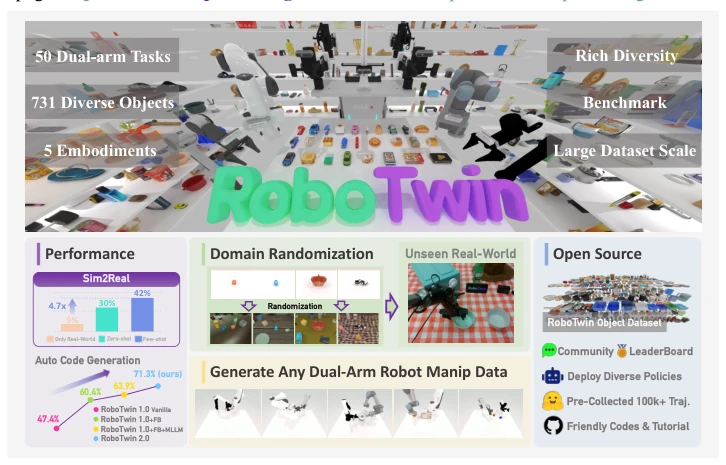
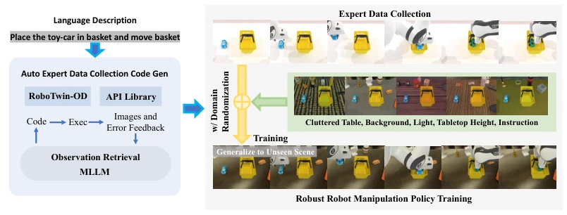
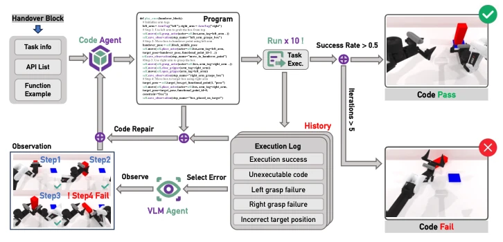
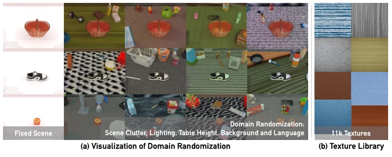
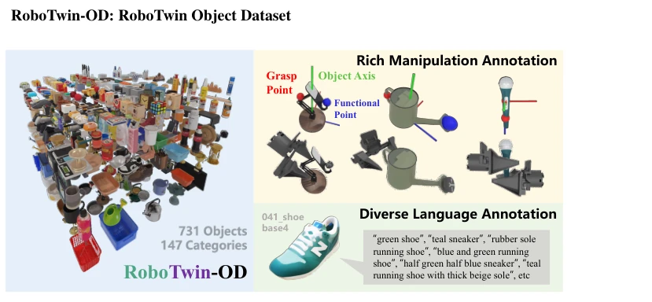
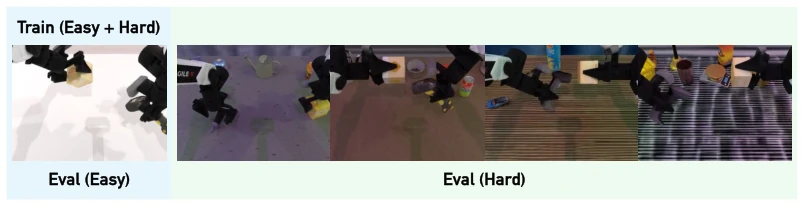

This RoboTwin 2.0 further pushes the scale of dual-arm operation datasets, with 100,000 trajectories, 50 tasks, and 5 robot types, appearing quite impressive. The core still relies on MLLM-generated code + simulation loop, belonging to engineering resource stacking; the claimed "self-improvement" actually still depends on VLM error correction. Sim-to-Real indeed shows improvement, but 10 real trajectories + 1,000 synthetic trajectories can outperform pure real data, raising questions about the quality of this "synthetic" data, as pure synthetic zero-shot performance remains weak. In benchmark tests, RDT and Pi0 perform adequately, but other models basically collapse under Hard settings, indicating that generalization is not yet thoroughly resolved. However, the open-source dataset and code are indeed convenient for the community, contributing a brick to the embodied AI field; at least, running experiments in the future will no longer require building simulators from scratch.
Dual-arm manipulation is extremely important, yet data acquisition is extremely difficult. Real data collection is prohibitively expensive, while synthetic data is often too unrealistic. Existing synthetic datasets either lack expert-level verification, containing trajectories full of failure samples [20]; or have weak domain randomization, with scenes too clean, failing immediately when deployed to reality [34]; they also ignore configuration differences between different robot arms, such as grasp strategies for low-DOF manipulators being completely different from Franka. This leads to policy overfitting, rendering the policy useless when the environment changes. The authors aim to address these three pain points: automated high-quality data generation, strong domain randomization, and cross-configuration adaptation. Especially regarding cross-configuration, many works focus on only one robot type, failing when switching platforms, which is a major taboo in actual deployment.

Figure 1: Overview of RoboTwin 2.0. RoboTwin 2.0 is a scalable framework for bimanual manipu- lation, integrating an expert data generation pipeline with a 50-task benchmark built on the RoboTwin Object Dataset (731 objects, 147 categories). A multimodal language agent automates task program synthesis, while flexible dual-arm configurations enable large-scale, diverse data collection. Policies trained on RoboTwin 2.0 exhibit improved robustness and generalization to unseen environments.
The overall process is divided into three steps. First, constructing the RoboTwin-OD object library, comprising 731 objects with semantic annotations. The core is expert code generation: using an MLLM to write Python code, then running it in simulation, where a VLM observer identifies errors and feeds back to the code generator for repair, looping until success. This is much more reliable than simply generating code, as it can automatically fix bugs. Second is domain randomization, implementing 5 dimensions: clutter, background, lighting, table height, and language instructions, to broaden the training distribution and prevent the model from rote memorization. Finally is configuration awareness, generating different grasp candidates for different robots (such as Piper and Franka) to avoid low-DOF arms being unable to reach. With this combination, data generation efficiency is indeed improved, but the MLLM hallucination problem remains a potential risk.

Figure 2: RoboTwin 2.0 Pipeline. Built on RoboTwin-OD and a skill API, the framework uses MLLM-based code generation with simulation feedback to produce expert task programs and domain- randomized trajectories for policy training and evaluation.

Figure 3: Expert Code Generation Pipeline.

Figure 4: Visualization of domain randomization and our texture library.

Figure 7: RoboTwin-OD. A large-scale object dataset for robotic manipulation with 147 categories and 731 objects, annotated with rich interaction labels and diverse language descriptions.
Fig.5 and Appendix K report results on 50 tasks. Non-pretrained models (ACT, DP, DP3) per- form poorly under Hard conditions, while pretrained models (RDT, Pi0) show stronger resilience, suggesting that vision–language–action pretraining provides useful priors for generalization. Still, success rates drop by 20.8% (RDT) and 30.1% (Pi0) from clean to randomized settings, underscoring robustness under domain shifts as a key challenge, likely due to limited diversity in pretraining data. DP3 achieves the best few-shot performance with limited samples, highlighting the role of 3D information, though its strong results partly stem from perfect point clouds and clean background segmentation in simulation. Together with Sections 4.3 and 4.4, these findings show RoboTwin 2.0’s value in complementi
The experiments mainly focus on four points. Code generation success rate reaches 71.3% under R2.0 multimodal feedback, higher than 1.0. Policy robustness, using randomized data for pre-training, shows significant improvement on unseen tasks. Sim-to-Real is the most eye-catching: 10 real trajectories + 1,000 randomized synthetic trajectories improve by 24.4% compared to pure 10 real trajectories. In benchmark tests, RDT and Pi0 perform passably under Hard settings, but other models drop significantly. This indicates that while data is useful, the model's inherent capability remains the bottleneck. Especially for models like DP3 that rely on 3D information, they perform well in simulation but may not work on real hardware.

Figure 12: Heterogeneous Dual-Arm Control via Object-Centric Manipulation.